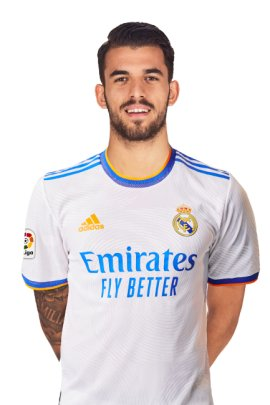
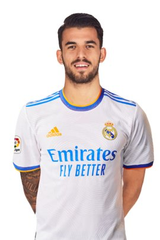
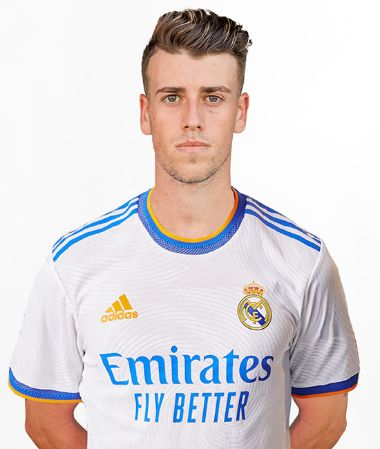
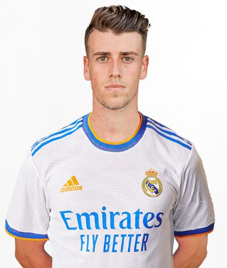

A Real Madrid középpályásai
| Név |
Nemzetiség |
Születési idő |
Mezszám |
Piaci érték |
Korábbi csapat |
| Toni Kroos |
Német |
1990. január 4. |
8 |
30 millió euró |
Bayern München |
| Luka Modrić |
Horvát |
1985. szeptember 9. |
10 |
10 milió euró |
Tottenham Hotspur |
| Casemiro |
Brazil |
1992. február 23. |
14 |
70 millió euró |
São Paulo |
| Federico Valverde |
Uruguai |
1998. július 22. |
15 |
65 millió euró |
Peñarol |
| Dani Ceballos |
Spanyol |
1996. augusztus 7. |
19 |
20 millió euró |
Real Betis |
| Isco |
Spanyol |
1992. április 21. |
22 |
15 millió euró |
Málaga |
| Eduardo Camavinga |
Francia |
2002. november 10. |
25 |
55 millió euró |
Stade Rennais |
| Antonio Blanco |
Spanyol |
2000. júilus 23. |
27 |
5 millió euró |
Utánpótlás játékos |


 


 
